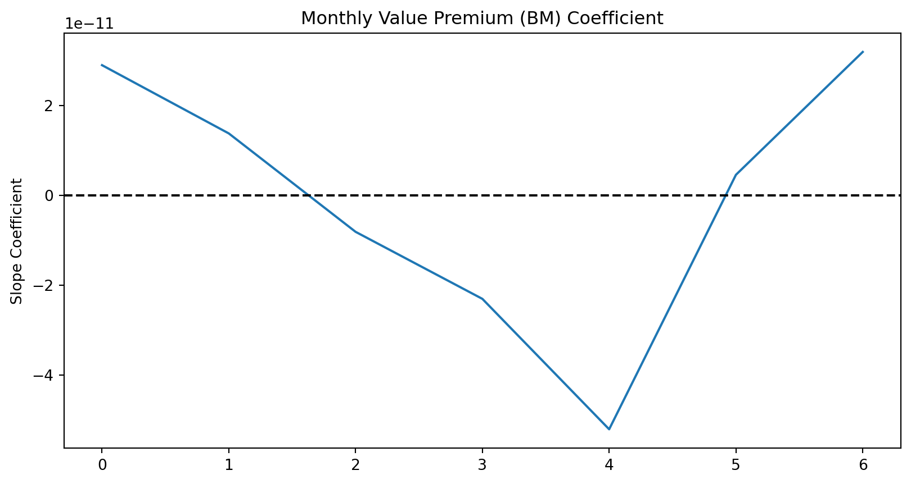
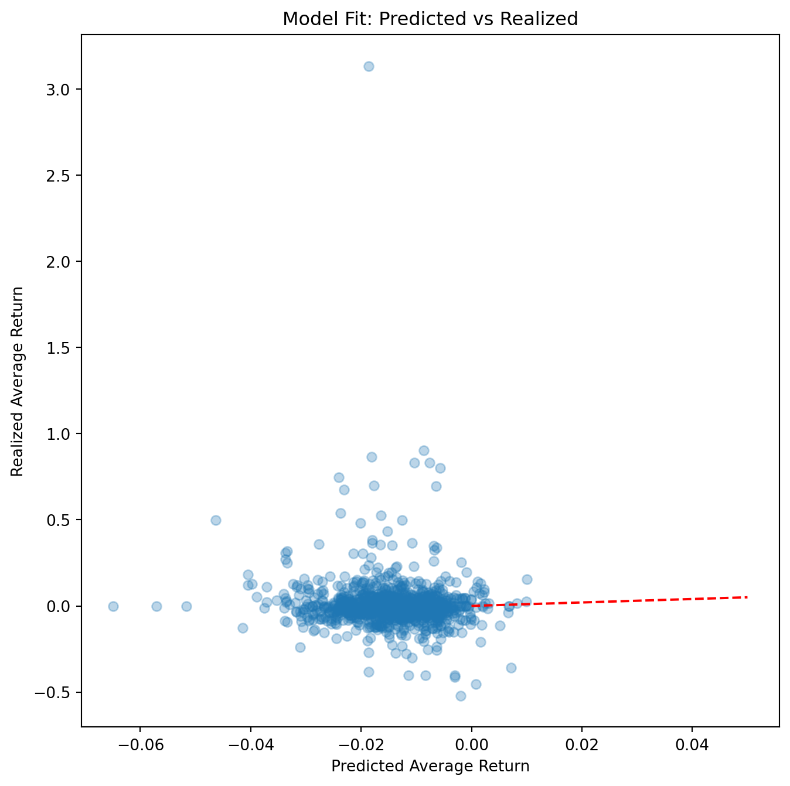

import pandas as pd
import numpy as np
import sqlite3
import statsmodels.formula.api as smf
import statsmodels.api as sm
from pandas.tseries.offsets import MonthEnd
# Connect to the Vietnamese data
tidy_finance = sqlite3.connect(database="data/tidy_finance_python.sqlite")
# Load Monthly Prices (HOSE & HNX)
prices_monthly = pd.read_sql_query(
sql="SELECT symbol, date, ret_excess, mktcap, mktcap_lag FROM prices_monthly",
con=tidy_finance,
parse_dates={"date"}
)
# Load Book Equity (derived from Vietnamese Financial Statements)
comp_vn = pd.read_sql_query(
sql="SELECT datadate, symbol, be FROM comp_vn",
con=tidy_finance,
parse_dates={"datadate"}
)
# Load Rolling Market Betas (Pre-calculated in Chapter 'Beta Estimation')
beta_monthly = pd.read_sql_query(
sql="SELECT symbol, date, beta FROM beta_monthly",
con=tidy_finance,
parse_dates={"date"}
)12 Fama-MacBeth Regressions
In this chapter, we delve into the implementation of the Fama and MacBeth (1973) regression approach, a cornerstone of empirical asset pricing. While portfolio sorts provide a robust, non-parametric view of the relationship between characteristics and returns, they struggle when we need to control for multiple factors simultaneously. For instance, in the Vietnamese stock market (HOSE and HNX), small-cap stocks often exhibit high illiquidity. Does the “Size effect” exist because small stocks are risky, or simply because they are illiquid? Fama-MacBeth (FM) regressions allow us to disentangle these effects in a linear framework.
We will implement a version of the FM procedure, accounting for:
- Weighted Least Squares (WLS): To prevent micro-cap stocks, which are prevalent and volatile in Vietnam, from dominating the estimates.
- Newey-West Adjustments: To handle the serial correlation often observed in Vietnamese market risk premiums.
12.1 The Econometric Framework
The Fama-MacBeth procedure is essentially a two-step filter that separates the cross-sectional variation in returns from the time-series variation.
12.1.1 Intuition: Why not Panel OLS?
A naive approach would be to pool all data (\(N\) stocks \(\times\) \(T\) months) and run a single Ordinary Least Squares (OLS) regression:
\[ r_{i,t+1} = \alpha + \beta_{i,t} \lambda + \epsilon_{i,t+1} \]
However, this assumes that the error terms \(\epsilon_{i,t+1}\) are independent across firms. In reality, stock returns are highly cross-sectionally correlated (if the VN-Index crashes, most stocks fall together). A pooled OLS would underestimate the standard errors, leading to “false positive” discoveries of risk factors. Fama-MacBeth solves this by running \(T\) separate cross-sectional regressions, effectively treating each month as a single independent observation of the risk premium.
12.1.2 Mathematical Derivation
12.1.2.1 Step 1: Cross-Sectional Regressions
For each month \(t\), we estimate the premium \(\lambda_{k,t}\) for \(K\) factors. Let \(r_{i,t+1}\) be the excess return of asset \(i\) at time \(t+1\). Let \(\boldsymbol{\beta}_{i,t}\) be a vector of \(K\) characteristics (e.g., Market Beta, Book-to-Market, Size) known at time \(t\).
The model for a specific month \(t\) is: \[ \mathbf{r}_{t+1} = \mathbf{X}_t \boldsymbol{\lambda}_{t+1} + \boldsymbol{\alpha}_{t+1} + \boldsymbol{\epsilon}_{t+1} \]
Where:
- \(\mathbf{r}_{t+1}\) is an \(N \times 1\) vector of returns.
- \(\mathbf{X}_t\) is an \(N \times (K+1)\) matrix of factor exposures (including a column of ones for the intercept).
- \(\boldsymbol{\lambda}_{t+1}\) is the vector of risk premiums realized in month \(t+1\).
To use Weighted Least Squares (WLS), We define a weighting matrix \(\mathbf{W}_t\) (typically diagonal with market capitalizations). The estimator for month \(t\) is: \[ \hat{\boldsymbol{\lambda}}_{t+1} = (\mathbf{X}_t^\top \mathbf{W}_t \mathbf{X}_t)^{-1} \mathbf{X}_t^\top \mathbf{W}_t \mathbf{r}_{t+1} \]
12.1.2.2 Step 2: Time-Series Aggregation
We now have a time-series of \(T\) estimates: \(\hat{\lambda}_1, \hat{\lambda}_2, \dots, \hat{\lambda}_T\). The final estimate of the risk premium is the time-series average: \[ \hat{\lambda}_k = \frac{1}{T} \sum_{t=1}^T \hat{\lambda}_{k,t} \]
The standard error is derived from the standard deviation of these monthly estimates: \[ \sigma(\hat{\lambda}_k) = \sqrt{\frac{1}{T^2} \sum_{t=1}^T (\hat{\lambda}_{k,t} - \hat{\lambda}_k)^2} \]
12.2 Data Preparation
We utilize data from our local SQLite database. In Vietnam, the fiscal year typically ends in December, and audited reports are required by April. To ensure no look-ahead bias, we lag accounting data (Book Equity) to match returns starting in July (a 6-month conservative lag, similar to Fama-French, but adapted for Vietnamese reporting delays).
We construct our testing characteristics:
- (Market Beta): The sensitivity to the VN-Index.
- Size (ln(ME)): The natural log of market capitalization.
- Value (BM): The ratio of Book Equity to Market Equity.
# Prepare Characteristics
characteristics = (
comp_vn
# Align reporting date to month end
.assign(date=lambda x: pd.to_datetime(x["datadate"]) + MonthEnd(0))
# Merge with price data to get Market Cap at fiscal year end
.merge(prices_monthly, on=["symbol", "date"], how="left")
.merge(beta_monthly, on=["symbol", "date"], how="left")
.assign(
# Compute Book-to-Market
bm=lambda x: x["be"] / x["mktcap"],
log_mktcap=lambda x: np.log(x["mktcap"]),
# Create sorting date: Financials valid from July of year t+1
sorting_date=lambda x: x["date"] + pd.DateOffset(months=6) + MonthEnd(0),
)
.get(["symbol", "bm", "beta", "sorting_date"])
.dropna()
)
characteristics.head()| symbol | bm | beta | sorting_date | |
|---|---|---|---|---|
| 8729 | VTV | 7.034945e+08 | 0.847809 | 2017-06-30 |
| 8732 | MTG | 2.670306e+09 | 1.140066 | 2017-06-30 |
| 8739 | MKV | 6.505031e+08 | -0.448319 | 2017-06-30 |
| 8740 | MIC | 1.243127e+09 | 0.772140 | 2017-06-30 |
| 8742 | MCP | 6.657350e+08 | 0.348139 | 2017-06-30 |
# Merge back to monthly return panel
data_fm = (prices_monthly
.merge(characteristics,
left_on=["symbol", "date"],
right_on=["symbol", "sorting_date"],
how="left")
# .merge(beta_monthly, on=["symbol", "date"], how="left")
.sort_values(["symbol", "date"])
)
# Forward fill characteristics for 12 months (valid until next report)
data_fm[["bm"]] = data_fm.groupby("symbol")[["bm"]].ffill(limit=12)
# Log Market Cap is updated monthly
data_fm["log_mktcap"] = np.log(data_fm["mktcap"])
# Lead returns: We use characteristics at t to predict return at t+1
data_fm["ret_excess_lead"] = data_fm.groupby("symbol")["ret_excess"].shift(-1)
# Cleaning: Remove rows with missing future returns or characteristics
data_fm = data_fm.dropna(subset=["ret_excess_lead", "beta", "log_mktcap", "bm"])
print(data_fm.head())
print(f"Data ready: {len(data_fm):,} observations from {data_fm.date.min().date()} to {data_fm.date.max().date()}") symbol date ret_excess mktcap mktcap_lag bm \
163 AAA 2017-06-30 0.129454 2078.455619 1834.816104 7.929854e+08
175 AAA 2018-06-30 -0.067690 2758.426126 2948.159140 8.161755e+08
187 AAA 2019-06-30 0.030469 3141.519560 3038.799575 1.389438e+09
199 AAA 2020-06-30 -0.035462 2311.250278 2387.972279 1.497272e+09
211 AAA 2021-06-30 0.275355 5423.280296 4241.283308 1.456989e+09
beta sorting_date log_mktcap ret_excess_lead
163 1.479060 2017-06-30 7.639380 -0.051090
175 1.090411 2018-06-30 7.922416 -0.095926
187 1.099956 2019-06-30 8.052462 -0.027856
199 0.954144 2020-06-30 7.745544 -0.098769
211 1.245004 2021-06-30 8.598456 -0.175128
Data ready: 5,075 observations from 2017-06-30 to 2023-06-3012.3 Step 1: Cross-Sectional Regressions with WLS
Hou, Xue, and Zhang (2020) argue that micro-cap stocks distorts inference because they have high transaction costs and idiosyncratic volatility. In Vietnam, this is exacerbated by “penny stock” speculation.
We implement Weighted Least Squares (WLS) where weights are the market capitalization of the prior month. This tests if the factors are priced in the investable universe, not just the equal-weighted average of tiny stocks.
def run_cross_section(df):
# Standardize inputs for numerical stability
# Note: We do NOT standardize the dependent variable (returns)
# We standardize regressors to interpret coefficients as "per 1 SD change" if desired,
# BUT for pure risk premium estimation, we usually keep raw units.
# Here we use raw units to interpret lambda as % return per unit of characteristic.
# Define Weighted Least Squares
model = smf.wls(
formula="ret_excess_lead ~ beta + log_mktcap + bm",
data=df,
weights=df["mktcap_lag"] # Weight by size
)
results = model.fit()
return results.params
# Apply to every month
risk_premiums = (data_fm
.groupby("date")
.apply(run_cross_section)
.reset_index()
)
print(risk_premiums.head()) date Intercept beta log_mktcap bm
0 2017-06-30 -0.089116 -0.063799 0.010284 2.897813e-11
1 2018-06-30 -0.023221 -0.008252 0.001890 1.377518e-11
2 2019-06-30 -0.079373 0.035622 0.006224 -8.139910e-12
3 2020-06-30 -0.031213 -0.114968 0.008999 -2.306768e-11
4 2021-06-30 0.081397 -0.011407 -0.007330 -5.211290e-1112.4 Step 2: Time-Series Aggregation & Hypothesis Testing
We now possess the time-series of risk premiums. We calculate the arithmetic mean and the -statistics.
Crucially, we use Newey-West (HAC) standard errors. Risk premiums in Vietnam often exhibit autocorrelation (momentum in factor performance). A simple standard error formula would be invalid.
def calculate_fama_macbeth_stats(df, lags=6):
summary = []
for col in ["Intercept", "beta", "log_mktcap", "bm"]:
series = df[col]
# 1. Point Estimate (Average Risk Premium)
mean_premium = series.mean()
# 2. Newey-West Standard Error
# We regress the series on a constant (ones) to get the SE of the mean
exog = sm.add_constant(np.ones(len(series)))
nw_model = sm.OLS(series, exog).fit(
cov_type='HAC', cov_kwds={'maxlags': lags}
)
se = nw_model.bse.iloc[0]
t_stat = nw_model.tvalues.iloc[0]
summary.append({
"Factor": col,
"Premium (%)": mean_premium * 100,
"Std Error": se * 100,
"t-statistic": t_stat,
"Significance": "*" if abs(t_stat) > 1.96 else ""
})
return pd.DataFrame(summary)
price_of_risk = calculate_fama_macbeth_stats(risk_premiums)
print(price_of_risk.round(4)) Factor Premium (%) Std Error t-statistic Significance
0 Intercept -1.8174 1.9117 -0.9507
1 beta -1.7859 1.0407 -1.7161
2 log_mktcap 0.2347 0.2048 1.1457
3 bm -0.0000 0.0000 -0.0928 12.5 Sanity Checks
12.5.1 Time-Series Volatility Check
Fama-MacBeth relies on the assumption that the risk premium varies over time. If your bm premium is truly near zero every month, the method fails.
Action: Plot the time series of the estimated coefficients . You want to see “noise” around a mean. If you see a flat line or a single massive spike, your data is corrupted.
import matplotlib.pyplot as plt
# Plot the time series of the BM risk premium
fig, ax = plt.subplots(figsize=(10, 5))
risk_premiums["bm"].plot(ax=ax, title="Monthly Value Premium (BM) Coefficient")
ax.axhline(0, color="black", linestyle="--")
ax.set_ylabel("Slope Coefficient")
plt.show()
12.5.2 The “Predicted vs. Realized” Scatter Plot
The ultimate test of an asset pricing model is whether it can price the test assets. If you group your stocks into portfolios (e.g., 25 portfolios sorted by Size and Beta), the model’s predicted return should match the actual average return.
Action: Compare the model’s prediction against reality.
- Calculate the average realized return for each stock .
- Calculate the predicted return: .
- Scatter plot them. They should align along the 45-degree line.
# Calculate average characteristics for each stock
stock_means = data_fm.groupby("symbol")[["ret_excess_lead", "beta", "log_mktcap", "bm"]].mean()
# Note: Ensure you grab the 'Premium (%)' divided by 100 if it was scaled
# Or use the raw mean from risk_premiums
lambda_beta = risk_premiums["beta"].mean()
lambda_size = risk_premiums["log_mktcap"].mean()
lambda_bm = risk_premiums["bm"].mean()
const = risk_premiums["Intercept"].mean()
stock_means["predicted_ret"] = (
const +
stock_means["beta"] * lambda_beta +
stock_means["log_mktcap"] * lambda_size +
stock_means["bm"] * lambda_bm
)
# Plot
fig, ax = plt.subplots(figsize=(8, 8))
ax.scatter(stock_means["predicted_ret"], stock_means["ret_excess_lead"], alpha=0.3)
ax.plot([0, 0.05], [0, 0.05], color='r', linestyle='--') # 45-degree line
ax.set_xlabel("Predicted Average Return")
ax.set_ylabel("Realized Average Return")
ax.set_title("Model Fit: Predicted vs Realized")
plt.show()
The scatter plot compares each stock’s average realized excess return to the return predicted by the estimated risk premia and its characteristics. If the model priced assets well, the points would cluster around the 45 degree line. Instead, the cloud is centered near zero on the horizontal axis, while realized returns vary widely on the vertical axis. The fitted line is nearly flat, indicating that differences in predicted returns explain very little of the variation in realized returns across stocks.
This pattern implies that, over this sample period, the estimated factor premia have weak cross sectional explanatory power at the individual stock level. Such weak fit is common in emerging markets and in short samples, where idiosyncratic volatility, thin trading, and episodic market regimes dominate the cross section of returns. It also reflects the well known fact that Fama MacBeth tests tend to have low power when applied to individual securities rather than diversified portfolios.
12.5.3 Correlation of Characteristics (Multicollinearity)
In Vietnam, large-cap stocks (high log_mktcap) are often the ones with high Book-to-Market ratios (banks/utilities) or specific Betas. If your factors are highly correlated, the Fama-MacBeth coefficients will be unstable and insignificant (low t-stats), even if the factors actually matter.
Action: Check the cross-sectional correlation.
# Check correlation of the characteristics
corr_matrix = data_fm[["beta", "log_mktcap", "bm"]].corr()
print(corr_matrix) beta log_mktcap bm
beta 1.000000 0.392776 -0.033748
log_mktcap 0.392776 1.000000 -0.203307
bm -0.033748 -0.203307 1.000000Interpretation:
- If correlation > 0.7 (absolute value), the regression struggles to distinguish between the two factors.
- For example, if
SizeandLiquidityare -0.8 correlated, the model cannot tell which one is driving the return, often resulting in both having insignificant t-stats.